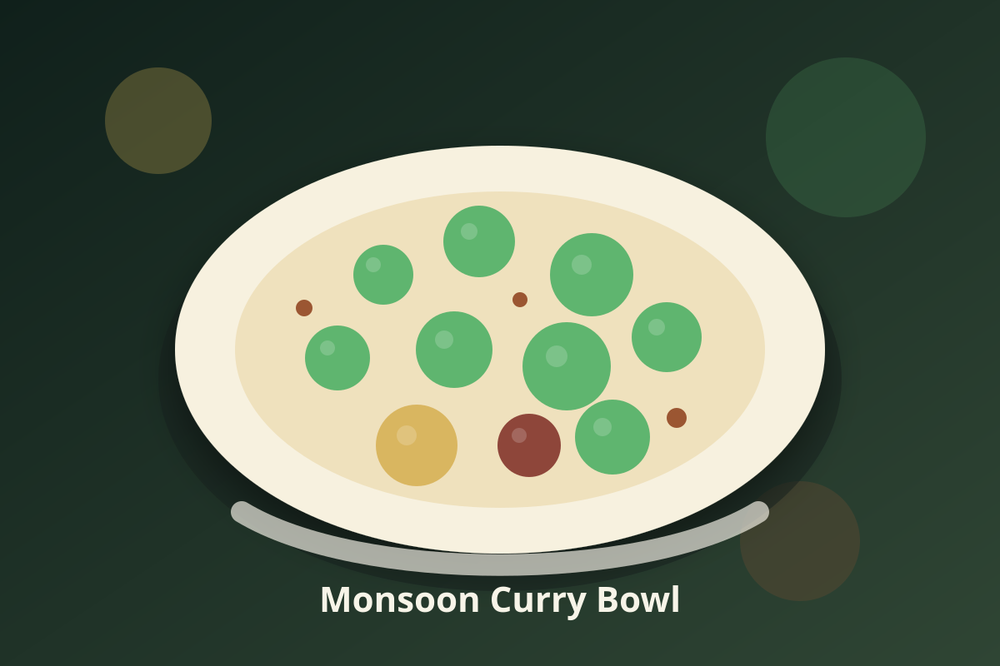

Jamaican · Vegan
Monsoon Curry Bowl
Potatoes, cauliflower, and chickpeas in a Jamaican curry and coconut sauce, ready in one pot.

Ingredients
- 1 tablespoon coconut oil
- 1 small onion, diced
- 3 cloves garlic, minced
- 2 scallions, sliced, greens reserved
- 1 teaspoon fresh thyme leaves
- 1 tablespoon Jamaican curry powder
- 1 cup water
- 2 cups diced potatoes (1-inch)
- 1 can chickpeas, drained and rinsed
- 1/2 teaspoon salt
- 2 cups cauliflower florets
- 1 cup light coconut milk
- 1 tablespoon lime juice
Instructions
- Select Sauté (medium) on the Instant Pot and heat the coconut oil. Cook the onion until soft, about 4 minutes, then stir in the garlic, scallion whites, thyme, and curry powder and cook them for 1 minute.
- Pour in 1 cup water and scrape the bottom of the pot clean. Press Cancel.
- Add the potatoes, then the chickpeas and salt, and set the cauliflower florets on top.
- Lock the lid, set the valve to Sealing, and pressure cook the potatoes and cauliflower on High for 4 minutes. Quick release the pressure.
- Stir in the coconut milk and lime juice; the potatoes should be fork-tender and the cauliflower soft.
- Spoon the curry into bowls and top with the scallion greens.